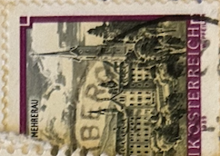
| SOURCE | TITLE| IMAGE MATCH | click to source page |
| eBay | 1921 LEMGO GERMANY NOTGELD EMERGENCY CURRENCY WW1 10 PFENNIG | eBay | 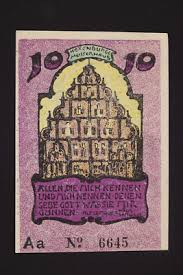 |
| eBay | Austria 1989 Bregenz Monasteri Abbazia Torre Edificio Architettura Vista 1V Mnh | eBay | 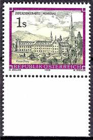 |
| Todocolección | austria 1634 - año 1985 - bimilenario de la ciu - Buy Antique stamps of Austria on todocoleccion | 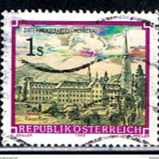 |
| Alamy | AUSTRIA - CIRCA 1989: A stamp printed in Austria issued for the 125th birth anniversary of Richard Strauss shows Richard Strauss (composer Stock Photo - Alamy | 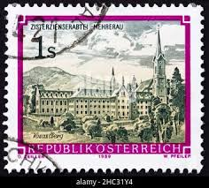 |
| HipStamp | 1989, Austria 1 Sch, Used, Sc 1466 | Europe - Austria, General Issue Stamp / HipStamp | 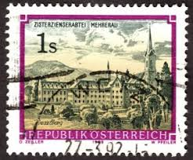 |
| Shutterstock | Museum Island Berlin Museum On 2002 Stock Photo 2646418733 | Shutterstock | 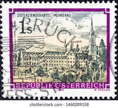 |
| eBay | St. Gallen Switzerland Stereoview Panorama View Antique c1870s Y11003 | eBay | 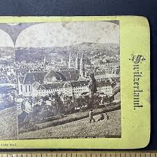 |
| AbeBooks | 100 Jahre St. Vinzenz in Österreich : Zur Hundertjahrfeier der österreichischen Lazaristenprovinz, 1853-1953. Hrsg. v. d. Missionspriestern (Lazaristen) in Österreich: Sehr gut Originalbroschur. (1953) ERSTAUSGABE. | Chiemgauer Internet Antiquariat GbR | 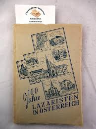 |
| Mercari | J.R.R. TOLKIEN 1977 CALENDAR Illustrations by | Mercari | 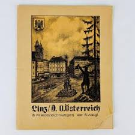 |
| Stampedia | stampedia AUSTRIA STAMP catalog | 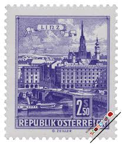 |
| Shutterstock | Vintage German Postage Stamp Stock Photo 29393158 | Shutterstock | 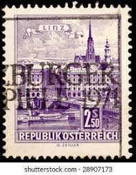 |
| eBay | 1946 Republic of Austria Postcard Cover Vienna Commemorative Postmark | eBay | 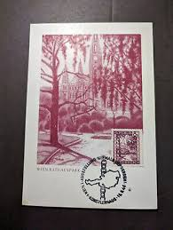 |
| eBay | Austria 1466,1471,MNH.Michel 1963,1467. Monastery 1989.Vorau Abbey,St Peter. | eBay | 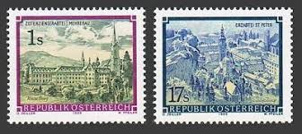 |
| eBay | Austria 1989 1s MONASTERY OF MEHRERAU, VORARLBERG SC 1466 MNH | eBay | 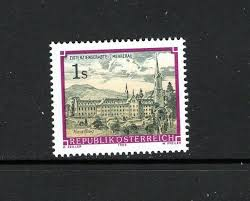 |
| eBay | Specimen, Austria Sc1466 Monastery of Mehrerau, Vorarlberg, Architecture | eBay | 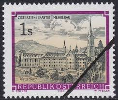 |
| HipStamp | Austria #698 Used - 2.5 Linz (1962) | Europe - Austria, General Issue Stamp / HipStamp | 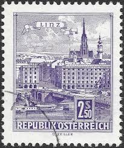 |
| ebid.net | Austria 1984 - SG1993 - 1s yellow black mauve - Wettingen Abbey - used 2 on eBid United States | 199440632 | 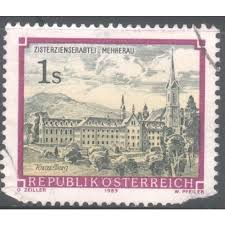 |
| Ness Stamps | Inverness | 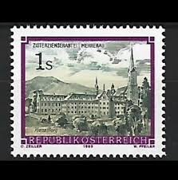 | |
| AbeBooks | Ansichten von Zürich. 1885. | Harteveld Rare Books Ltd. | 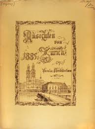 |
| Shutterstock | 10+ Hundred Osterreich Stamp Royalty-Free Images, Stock Photos & Pictures | Shutterstock | 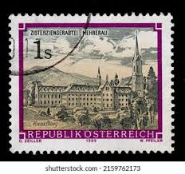 |
| Discogs | Bach – I Musici – Concert Pentru Flaut / Concert Pentru Oboi – Vinyl (LP, Album), [r4520950] | Discogs | 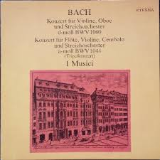 |
| eBay | 1913 TRAVEL HISTORY GUIDE BOOKLET WIEN AUSTRIA WIEDEN GEMEINDE SECTION | eBay | 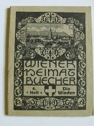 |
| Alamy | Stamp printed by Austria, shows Danube Bridge, Linz, circa 1962 Stock Photo - Alamy | 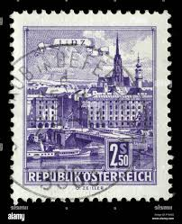 |
| Shutterstock | Stamps Monastery: Over 1,636 Royalty-Free Licensable Stock Photos | Shutterstock | 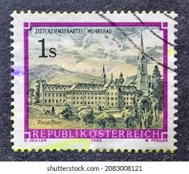 |
| Poshmark | Accents | Vienna Austria Avstria Blue And White Vintage Tile | Poshmark | 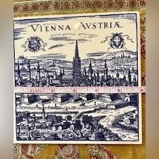 |
| HipStamp | Austria 698 (mhr) 2.50s Danube Bridge, Linz, vio (1962) | Europe - Austria, General Issue Stamp / HipStamp | 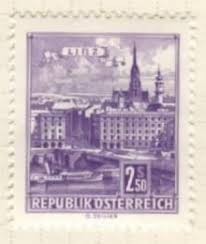 |
| WorthPoint | 1920's Set of 12 KARL SCHWETZ POSTCARDS AQUATINTS OF VIENNA + ORIGINAL COVER! | #1916393146 | 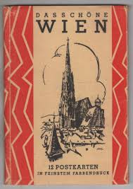 |
| Alamy | AUSTRIA - 1989: A stamp printed in Austria, is shown Wettingen-Mehrerau Abbey Stock Photo - Alamy | 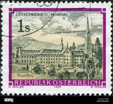 |
| Find Your Stamps Value | Value of rare vietnam stamps | 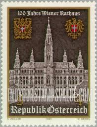 |
| eBay | Austria 1966 Austrian Posts and Telegraphs Administration stamp. MNH. Sg 1464. | eBay | 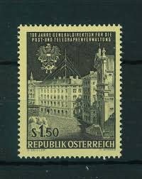 |
| eBay | 1202 - Austria 1966 - Centenary of Austrian Posts - Telegraphs - MNH Set | eBay | 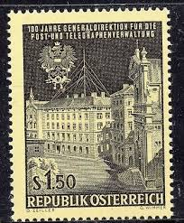 |
| Dreamstime.com | 195 Voralberg Stock Photos - Free & Royalty-Free Stock Photos from Dreamstime | 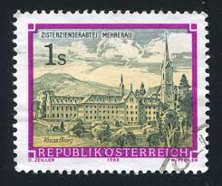 |
| eBay | 10 PFENNIG 1921 City of LEMGO Lippe UNC GERMANY Notgeld Banknote #PC123.U | eBay | 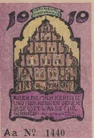 |
| Alamy | An old postage stamp printed in Hungary shows value 2 ft and Text Magyar Posta circa 1958, isolated on white background, vintage retro ancient stamps Stock Photo - Alamy | 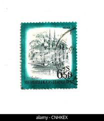 |
| Shutterstock | 71 Cistercian Abbey Stamps Royalty-Free Images, Stock Photos & Pictures | Shutterstock | 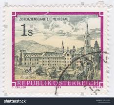 |
| eBay | AUSTRIA SCOTT# 757 MNH CHURCHES OF STS. MARIA ROTUNDA AND BARBARA | eBay | 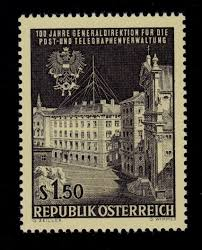 |
| eBay | RARE Vintage Wienerwald Gastlichkeit Restaurant Bar Cocktail Lounge Menu | eBay | 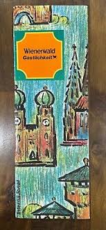 |
| eBay | AUSTRIA # 757 MNH HEADQUARTERS POST & TELEGRAPH | eBay | 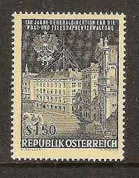 |
| eBay | LEMGO NOTGELD 10 PFENNIG 1921 EMERGENCY MONEY GERMANY BANKNOTE (26271) | eBay | 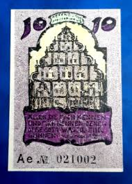 |
| iStock | Weissenburg Bavaria Stamp Stock Photo - Download Image Now - Postage Stamp, Germany, 1964 - iStock | 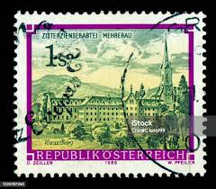 |
| eBay | 80 HELLER 1920 City of KREMS AUSTRIA Notgeld Paper Money Banknote #PD645.U | eBay | 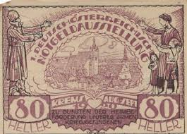 |
| 1962 Austria Stamp | 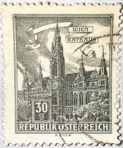 | |
| Shutterstock | 1+ Thousand Telegraph Letter Royalty-Free Images, Stock Photos & Pictures | Shutterstock | 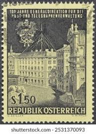 |
| Discogs | Bach / I Musici – Concert Pentru Flaut, Vioară, Clavecin Și Orchestră De Coarde / Concert Pentru Oboi, Vioară Și Orchestră De Coarde – Vinyl (LP, Reissue, Mono), [r4164809] | Discogs | 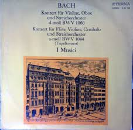 |
| eBay.de | 10 HELLER 1920 Stadt PETTENBACH Oberösterreich Österreich Notgeld #PE424.D | eBay.de | 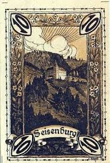 |
| eBay | Dom | eBay | 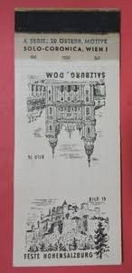 |
| eBay | Austria Stamp Scott #757, Mint Hinged | eBay | 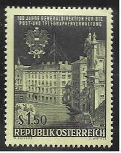 |
| Shutterstock | 3 Territorial Abbey Wettingen Mehrerau Royalty-Free Images, Stock Photos & Pictures | Shutterstock | 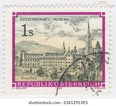 |
| Stamp Community Forum | Wiki'd Buildings On Stamps - Page 8 - Stamp Community Forum | 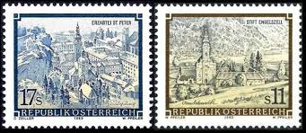 |
| Shutterstock | 6+ Hundred Telegraph Stamp Royalty-Free Images, Stock Photos & Pictures | Shutterstock | |
| AbeBooks | Mozart in Salzburg a Study and Guide by Kenyon Max - AbeBooks | |
| WorthPoint | 1961 ROAD MAP FREYTAG-BERNDT PLAN VON WIEN GESAMTPLAN | #138763770 | |
| eBay | Austria Vienna Antique Europe City Maps for sale | eBay | |
| eBay | ALFRED PETER: Exlibris für Otto Bertschi 1905 | eBay | |
| Etsy | Quartet Game German Cities Quartet Vintage United Altenburger and Stralsunder Spielkartenfabrik AG Stuttgart-s - Etsy | |
| eBay | Innsbruck Hotel Tiroler Hof Original Holzstich 1880 | eBay | |
| eBay | 288000] Austria, Schwarzach, 10 Heller, monastère 1920-12-31, UNC, Mehl:FS 978 | eBay | |
| Shutterstock | Karnal Haryana India -august 5th 2025-closeup Stock Photo 2671482319 | Shutterstock | |
| eBay | Black Proof, Essay Austrian Stamps for sale | eBay | |
| iStock | Austrian Building Postage Stamp Stock Photo - Download Image Now - Austria, Austrian Culture, Building Exterior - iStock |